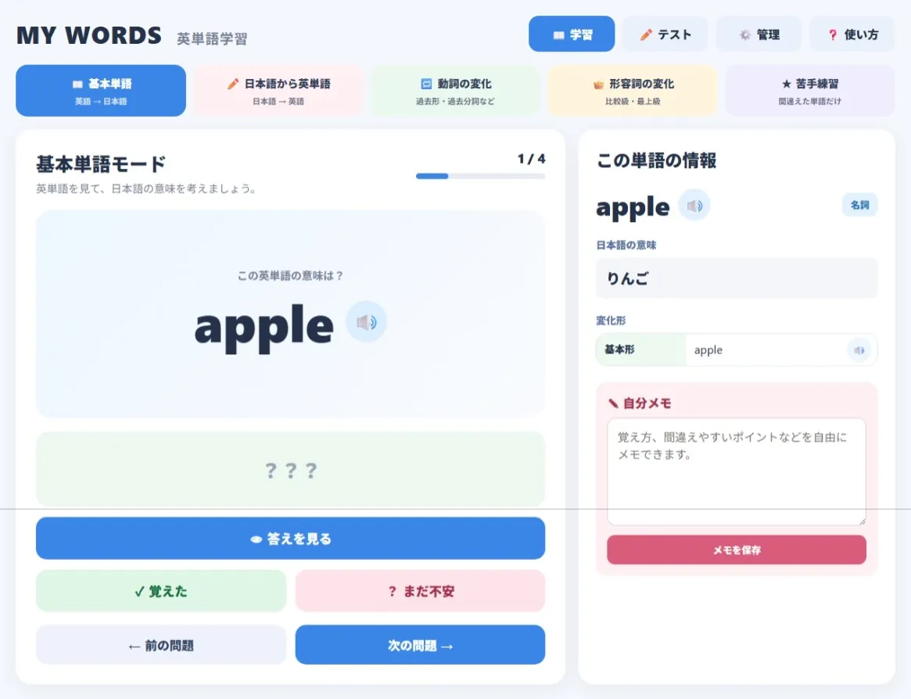
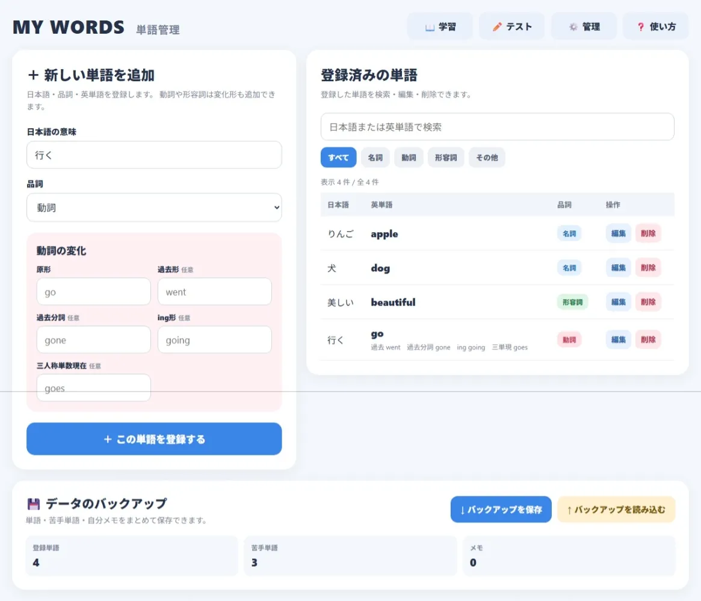

MY WORDS
使い方
MY WORDS の使い方
自分で英単語を登録して、
覚えて、テストして、
苦手な単語をくり返し練習できる
自分だけの英単語帳
です。
はじめて使う人は、 このページを見ながら 始めてみましょう！
はじめて使う人は、 このページを見ながら 始めてみましょう！
まずはこの
3ステップ
はじめて使うときは、
この順番でやってみましょう。
1
単語を登録する
「管理」から、
今日習った単語や
覚えたい単語を登録します。
2
学習する
意味や変化形を見ながら覚えます。
分からない単語は
「まだ不安」にしておきましょう。
3
テストする
覚えたらテスト！
間違えた単語は
自動で「苦手」に追加されます。
📖 学習画面
まずは単語を見ながら覚えましょう。
音声を聞いたり、
自分だけのメモを残したりできます。

▲ 学習画面では、
英単語を見て意味を考えてから
「答えを見る」を押します。
音声を聞いたり、
「覚えた」「まだ不安」を選んだり、
自分メモを残したりできます。
👆 画像をタップすると大きく見られます
5つの学習モード
📖 基本単語
英語を見て、日本語の意味を考える
✏️ 日本語から英単語
日本語を見て、英単語を考える
🔁 動詞の変化
go → went → gone などを覚える
👑 形容詞の変化
big → bigger → biggest などを覚える
★ 苦手練習
苦手に登録した単語だけを練習
自分メモ
単語ごとに、
自分だけのメモを残せます。
たとえば、
「スペルをよく間違える」
「went は goed ではない」
「学校のテストに出る」
など、 自分が覚えやすい内容を 自由に書いてみましょう。
たとえば、
「スペルをよく間違える」
「went は goed ではない」
「学校のテストに出る」
など、 自分が覚えやすい内容を 自由に書いてみましょう。
✏️ テスト画面
覚えた単語を、
実際に入力して確認します。
間違えたときは、
正しいスペルを大きく3回書いて覚えます。
💡 間違えても大丈夫！
間違えた英単語は、
自動で「苦手単語」に追加されます。
3回書く → メモする → 苦手練習する
とくり返すことで、 間違えやすい単語を重点的に練習できます。
3回書く → メモする → 苦手練習する
とくり返すことで、 間違えやすい単語を重点的に練習できます。
⚙️ 自分の単語帳を作ろう
「管理」画面から、
今日習った単語や
覚えたい単語を登録します。

▲ 左側から新しい単語を登録します。
右側では、
登録済みの単語を検索・編集・削除できます。
画面下には、
大切なデータを保存する
バックアップ機能があります。
👆 画像をタップすると大きく見られます
単語を登録
日本語と英単語を登録します。
品詞を選ぶと、 動詞や形容詞の変化形も登録できます。
まだ習っていない変化形は、 空欄のままで大丈夫です。
品詞を選ぶと、 動詞や形容詞の変化形も登録できます。
まだ習っていない変化形は、 空欄のままで大丈夫です。
登録例
行く
動詞
| 原形 | go |
| 過去形 | went |
| 過去分詞 | gone |
| ing形 | going |
| 三単現 | goes |
📚 プリセットから始めよう
管理画面の「登録済みの単語」と「データのバックアップ」の間に、プリセットのコーナーがあります。
小学校英語300語
小学校で学ぶ基礎語を、20語ずつ15セットに分けています。「内容を見る」で単語を確認してから「単語帳に追加」を押します。
英検4級100語
英検4級対策の基礎語を、20語ずつ5セットに分けています。公式の単語リストではなく、公式過去問を参考に独自選定したリストです。
追加しても今までのデータは消えません
すでに同じ英単語がある場合、その単語の意味・品詞・変化形は上書きしません。プリセットの所属情報だけを加えます。苦手登録と自分メモもそのまま残り、同じプリセットを何度追加しても増殖しません。
おすすめの順番は、小学校英語 → 英検4級 → 苦手単語です。学習画面とテスト画面では「単語の範囲」と「セット」を選べます。
おすすめの順番は、小学校英語 → 英検4級 → 苦手単語です。学習画面とテスト画面では「単語の範囲」と「セット」を選べます。
💾 バックアップをしよう
MY WORDSの単語データは、
今使っているiPadやブラウザに保存されます。
大切な単語帳なので、
ときどきバックアップしておくと安心です。
⚙️ 管理
→
💾 バックアップを保存
→
JSONファイルを保管
📱 新しいiPadにも移せます
新しいiPadでMY WORDSを開いて、
「管理」 → 「バックアップを読み込む」
を選び、 保存しておいたファイルを読み込めば、 単語・苦手単語・自分メモを戻せます。
「管理」 → 「バックアップを読み込む」
を選び、 保存しておいたファイルを読み込めば、 単語・苦手単語・自分メモを戻せます。
📱 iPadのホーム画面に追加
ホーム画面に追加すると、
普通のアプリのように
MY WORDSをすぐ開けます。
1
SafariでMY WORDSを開く
QRコードを読み取るか、
SafariでMY WORDSを開きます。
2
共有ボタンを押す
Safariにある
「□↑」のような共有ボタンを押します。
3
ホーム画面に追加
メニューの中から
「ホーム画面に追加」を選びます。
4
MY WORDSからスタート
ホーム画面にできた
MY WORDSのアイコンを押せば、
すぐ学習できます。
自分の単語データについて
同じMY WORDSのURLを
お友達が使っても、
登録した単語が混ざることはありません。
それぞれのiPad・スマートフォン・ブラウザに 自分の単語が保存されます。
ただし、 SafariのWebサイトデータを削除した場合などは、 保存した単語が消えることがあります。
そのため、 ときどきバックアップしておくのがおすすめです。
それぞれのiPad・スマートフォン・ブラウザに 自分の単語が保存されます。
ただし、 SafariのWebサイトデータを削除した場合などは、 保存した単語が消えることがあります。
そのため、 ときどきバックアップしておくのがおすすめです。
さあ、
自分だけの単語帳を作ってみよう！
まずは今日習った単語を
5個
登録して、
5問テストに挑戦してみましょう 🎉
5問テストに挑戦してみましょう 🎉